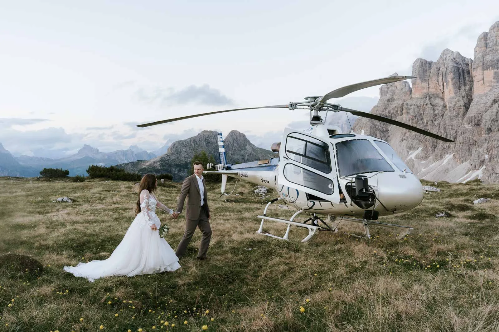
Ein Helikopter macht aus einer Zweitagestour einen Zehn-Minuten-Flug und setzt euch dort ab, wo sonst kaum jemand stehen kann — ein einsames Felsband, eine Gletscherschulter, ein Gipfel im Kranz der bleichen Dolomitentürme. Es ist der direkteste Weg zum Außergewöhnlichen, den wir kennen: kein langer Zustieg, kein Kompromiss bei der Aussicht, nur ihr beide und ein Berg ganz für euch. Hier steht alles, was wir beim Planen von Helikopter-Elopements in den Dolomiten gelernt haben — wie der Flug abläuft, was er kostet, wo ihr landen könnt, die Papiere, das Wetter, und wie der Tag sich nach euch anfühlt.
Ein Helikopter-Elopement ist eine sehr kleine Berghochzeit mit einem Unterschied: Ihr erreicht eure Zeremonie aus der Luft. Ein zugelassener Alpin-Helikopter hebt euch beide (und auf Wunsch ein bis zwei Trauzeugen) von einem Talhubschrauberlandeplatz ab, fliegt über die Gipfel und setzt auf einem genehmigten Landeplatz auf — einem Grat, einer Hochwiese, einem Gletscherplateau. Ihr gebt euch das Ja mit dem ganzen Massiv zu euren Füßen, macht Porträts, solange das Licht steht, und fliegt zurück. Der Flug ist kein Transfer — er wird zur halben Geschichte.
Die Maschine fasst bis zu sechs Passagiere plus Pilot — ein bis zwei Trauzeugen oder sogar ein paar enge Gäste sind also kein Problem, und ihr fliegt trotzdem bequem. Die meisten unserer Paare bleiben zu zweit; manche nehmen ihre Trauzeugen für die Zeremonie mit hinauf. So oder so ist Platz.
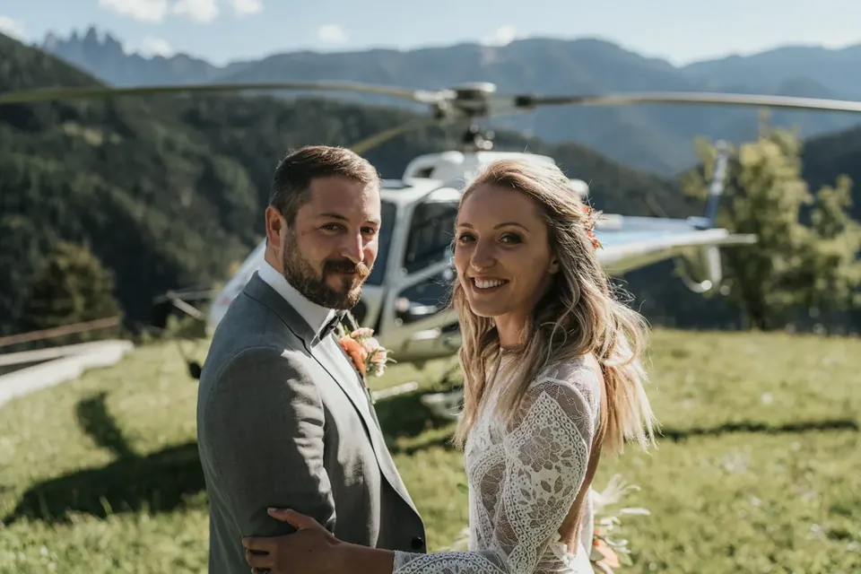
Paare kommen aus verschiedenen Gründen dazu. Manche können nicht weit wandern — ein Knie, eine Schwangerschaft, ein Kleid, das nie für Geröll gedacht war — und ein Flug schenkt ihnen trotzdem einen Gipfel. Manche wollen einfach das Eine, das man in einem überlaufenen Massiv noch kaufen kann: einen Ort, für eine Stunde, mit niemandem sonst darin. Und manche lieben den Flug um seiner selbst willen, die offene Tür, das Tal, das wegsackt, den ersten Blick auf die Gipfel von oben. Was auch immer euch bringt — das Ergebnis ist dasselbe: ein Tag, der sich weniger wie eine Hochzeit anfühlt, bei der ihr wart, und mehr wie ein Abenteuer, das ihr gemeinsam unternommen habt.
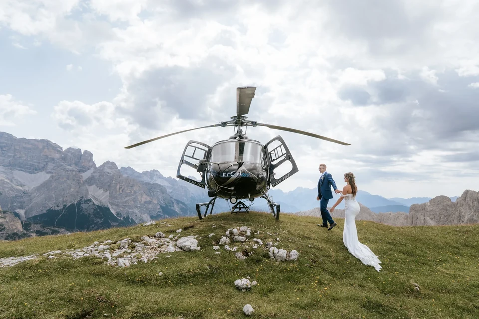
1. Erstes Gespräch. Wir starten mit einem Videocall, um euren Wunschtag zu verstehen — Sonnenaufgang oder goldene Stunde, kahler Gipfel oder See, nur ihr zwei oder ein paar Gäste. 2. Landeplatz & Anbieter. Wir bringen eure Vorstellung mit einem genehmigten Landeplatz zusammen und buchen einen zugelassenen Alpin-Anbieter; manche Plätze brauchen eine Voranmeldung. 3. Timing & Wetterfenster. Wir legen einen Termin fest, halten aber ein flexibles Fenster und einen Reservetag frei — geflogen wird nur bei sicheren Bedingungen. 4. Getting Ready. Haare, Make-up und Ankleiden passieren im Tal vor dem Flug. 5. Der Flug. Kurzes Aufsetzen am Helipad, Headsets auf, und Minuten später steigt ihr am Berg aus. 6. Zeremonie & Porträts. Eure Worte, dann Porträts — der Pilot bleibt mit euch am Berg, und ihr habt bis zu einer ganzen Stunde pro Landung, bevor es weitergeht. 7. Zurück ins Tal — oft mit Zeit für eine zweite Landung, ein Hüttenessen oder einen Toast am See.
Diese Stunde zählt. Weil der Pilot bei euch wartet, statt wegzufliegen und zurückzukommen, gibt es kein Schielen nach einer zurückkehrenden Maschine und keine Hetze durchs Ja-Wort — ihr habt eine echte, entspannte Stunde pro Ort für Zeremonie und Porträts.
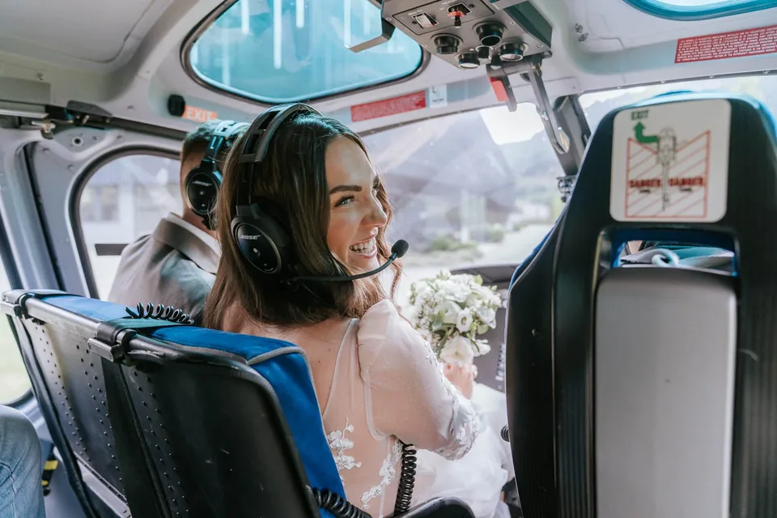
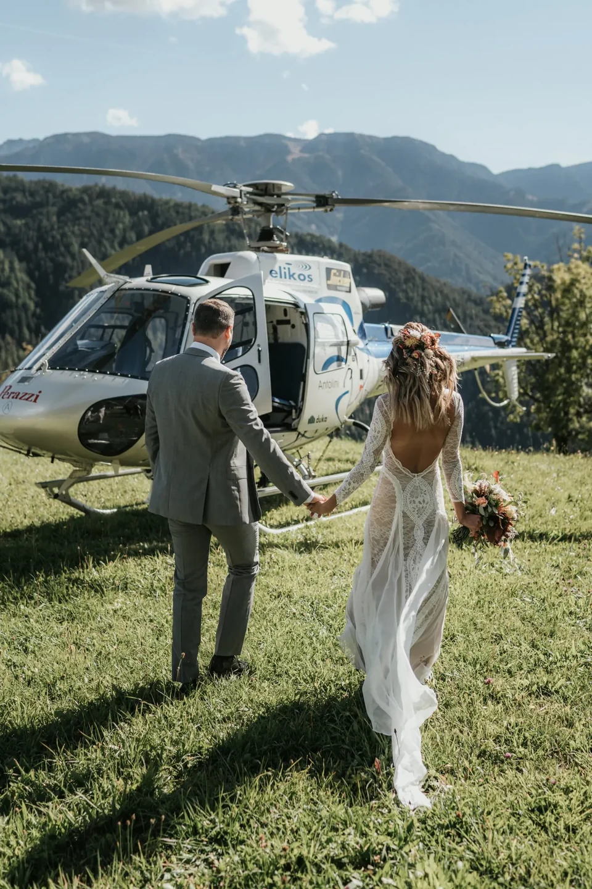
Der Flug selbst ist kurz und unvergesslich. Der Rotor dreht auf, die Maschine wird leicht, und das Tal sackt einfach weg; eine Minute später ziehen die ersten Gipfel auf Augenhöhe am Fenster vorbei, näher, als ihr sie je gesehen habt. Man spricht kaum — man schaut nur. Dann sucht der Pilot die Linie hinein, die Kufen setzen auf, der Lärm fällt ab, und ihr steigt in eine Stille aus, die so vollständig ist, dass sie klingt. Dieser Kontrast — von Donner zu Stille in dreißig Sekunden — ist ein Gefühl, von dem Paare noch Jahre erzählen.
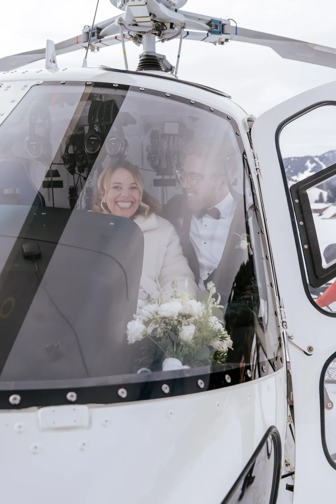
Ein Sonnenaufgangsflug. 04:30 Haare & Make-up im Tal · 05:30 kurze Fahrt zum Helipad · 06:00 Abheben, wenn das erste Licht die Gipfel trifft · 06:15 Aufsetzen am Grat, Zeremonie, während der Fels rosa wird · 06:40 Porträts im stillen, leeren Licht · 07:15 Rückflug · 08:00 Frühstück auf der Hütte.
Ein ganzer Tag zur goldenen Stunde. 15:00 Getting Ready · 16:30 erster Flug zu einer hohen Landung für Porträts · 17:30 Zeremonie an einem zweiten Ort · 18:30 das Massiv glüht im letzten Licht (Enrosadira) · 19:15 Rückflug · 20:00 Abendessen auf der Hüttenterrasse. Die Zeiten verschieben sich mit der Saison — den genauen Ablauf bauen wir um den Sonnenaufgang und euren Landeplatz.
Eines steckt die äußeren Grenzen des Tages ab: Der Helikopter darf ab einer halben Stunde vor Sonnenaufgang abheben und muss spätestens eine halbe Stunde nach Sonnenuntergang zurück am Airport sein. Das ist ein großzügiges Fenster — weit genug für einen echten Erstlicht-Flug ebenso wie für einen ganzen Abend zur goldenen Stunde —, und eure genauen Zeiten bauen wir um den Sonnenaufgang eures Datums, der sich mit der Saison verschiebt.

Der Flug wird als Charter gebucht, und die Struktur ist einfach. Das Minimum ist ein 50-Minuten-Flug inklusive einer Landung — genug für Zeremonie und Porträts an einem Ort. Ihr könnt weitere Landungen dazunehmen, um mehr vom Massiv zu sehen; wir empfehlen meist maximal drei, damit der Tag vom Sein am Berg handelt und nicht vom Ein- und Aussteigen. Einige begehrte Plätze haben einen Aufpreis (siehe unten). Der genaue Flugpreis hängt von Datum, Landungen und Anbieter ab — wir bestätigen ihn schriftlich, bevor etwas gebucht wird.
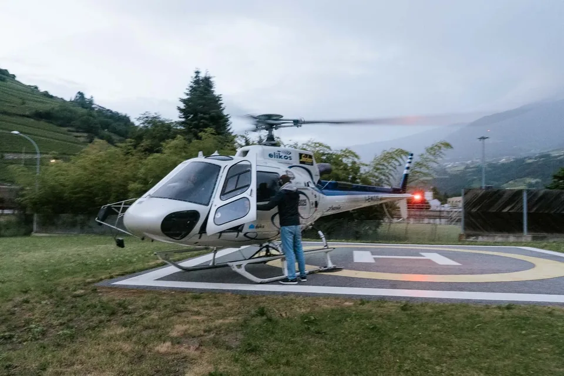
Man sollte ehrlich sagen, was den Preis treibt. Die größeren Hebel sind die gesamte Flugzeit, die Zahl der Landungen über die erste hinaus und der Landeplatz selbst — einige Premium-Orte haben einen Aufpreis. Zusatzoptionen — eine zweite Location, Film, Blumen, eine freie Trauung — kommen obendrauf, und wir kalkulieren sie transparent, damit auf der Rechnung nichts überrascht. Ein Helikoptertag ist nicht der günstigste Weg zu heiraten, aber er kauft etwas Bestimmtes: eine Stunde auf einem Gipfel, der euch sonst zwei Tage und viel Glück kosten würde.
Ein Flug öffnet Gelände, das ein normales Elopement nie erreicht: ein einsames Felsband, ein Gletscherplateau an der Marmolada, ein Gipfel, der sonst eine Zweitagestour wäre, eine Schulter unter den Cadini- oder Drei-Zinnen-Spitzen. Landungen fliegen zugelassene Alpin-Anbieter ausschließlich auf genehmigten Plätzen — nicht überall und nicht in jeder Schutzzone. Wir wählen den Ort gemeinsam nach Aussicht, Licht und dem, was tatsächlich erlaubt ist, und bestätigen ihn vor der Buchung.
Grob gibt es drei Arten von Landung, und sie fühlen sich verschieden an. Ein Grat oder Gipfel gibt euch Ausgesetztheit und einen 360-Grad-Horizont — die kühnsten Bilder, den meisten Wind. Eine Hochwiese oder Schulter ist sanfter unter den Füßen, freundlicher zum Kleid und leicht zu begehen. Ein Gletscherplateau ist das seltenste und unwirklichste — ein weißes Feld ohne etwas Menschliches in Sicht. Nicht jede ist überall oder in jeder Saison verfügbar, und manche liegen in gesperrten Schutzzonen; wir arbeiten nur dort, wo Landungen erlaubt und sicher sind.
Ihr müsst euch nicht selbst um Genehmigungen kümmern: Das Hubschrauber-Unternehmen holt die Landefreigaben für jeden Platz ein — genau deshalb fliegen wir nur mit zugelassenen lokalen Anbietern. Eine Handvoll der ikonischsten Orte — die Seceda über St. Ulrich ist das klassische Beispiel — kostet eine zusätzliche Landegebühr, meist rund 300–500 €. Wir sagen euch vorab, welche eurer Wunschlandungen frei nutzbar ist und welche einen Aufpreis hat, damit die Auswahl, in die ihr euch verliebt, auch eine ist, die wir wirklich umsetzen können.
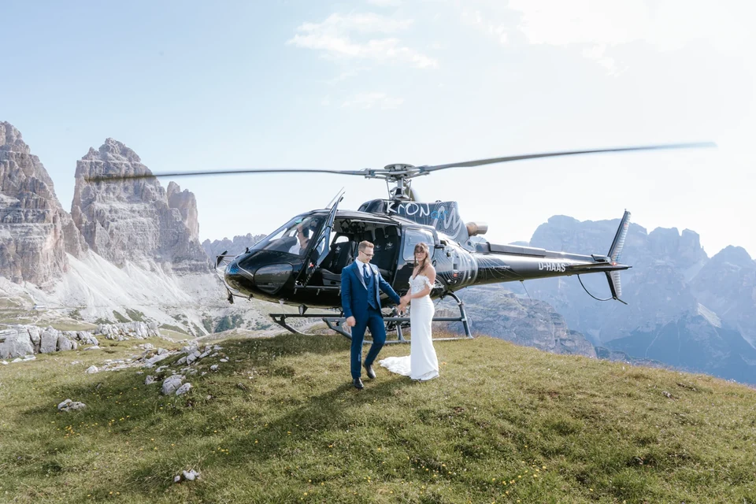
Die meisten Paare fliegen nach Venedig, Verona oder Innsbruck und fahren das letzte Stück — etwa zwei bis drei Stunden ins Herz der Dolomiten. Das Getting Ready passiert im Tal, dann eine kurze Fahrt zum Start-Helipad. Von dort dauert der Flug Minuten, nicht Stunden. Wenn ihr nicht selbst fahren wollt, organisieren wir Transfers, damit der Morgen ruhig bleibt.
Es gibt zwei lokale Anbieter, mit denen wir arbeiten, jeder mit eigener Basis. Elikos fliegt von seinem Flugplatz in Pontives unterhalb von St. Ulrich im Grödnertal — rund 30 Autominuten von Brixen. Kron Air startet von Olang im Pustertal, etwa 20 Minuten von Bruneck. Welchen wir wählen, hängt von eurem Landeplatz und eurer Unterkunft ab; beide bringen euch mit einem kurzen Flug in die hohen Dolomiten. Wir stimmen die Basis auf euren Tag ab und sagen euch genau, wo ihr wann sein müsst.
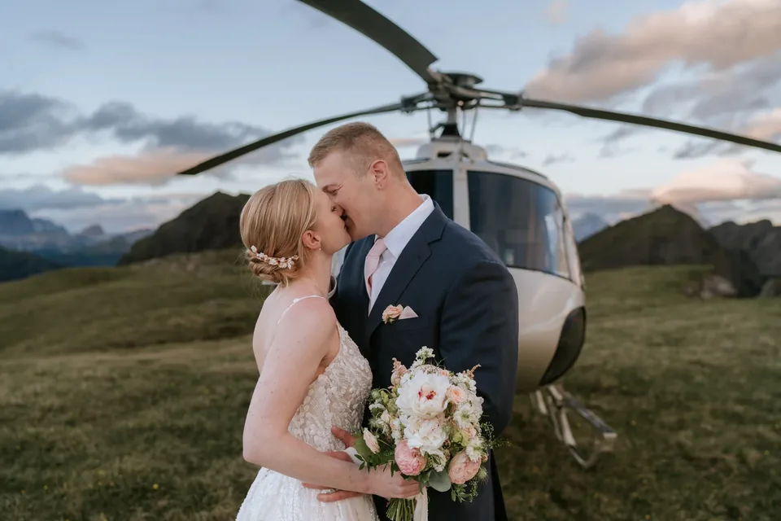
Ein Helikopter fliegt nur bei sicheren Bedingungen — gute Sicht, machbarer Wind, kein Gewitter. Bergwetter kippt schnell, deshalb beobachten wir die Vorhersage in den Tagen davor und halten ein flexibles Fenster frei — ab unserem mittleren Paket zusätzlich einen Reservetag. Geht der Flug am ersten Morgen nicht, verschieben wir ihn; öffnet sich gar kein Fenster, haben wir einen Plan B am Boden bereit — ein Bergbahn-Gipfel, ein See, ein Grat zu Fuß —, damit ihr so oder so schön heiratet. Nebel und tiefe Wolken sind kein Feind: Manche der stimmungsvollsten Bergbilder entstehen genau in diesem Licht.
Ein Sommerflug setzt euch auf grüne Schultern und warmen Fels im ersten oder letzten Licht; ein Winterflug in eine weiße Welt — Schnee bis zum Horizont, die Gipfel auf Schwarzweiß reduziert, euer Atem in der Luft. Der Winter ist stiller, kälter und dramatischer und öffnet etwas, das der Sommer nicht kann: eine Zeremonie auf einem Schneegrat — und, für Mutige, Ski an und die erste Abfahrt gemeinsam in Kleid und Fliege. Er verlangt warme Schichten, griffige Kanten und ein flexibles Auge fürs Wetter — wir kümmern uns um Flug, Timing und Licht, ihr bringt nur den Mut mit. Beide Jahreszeiten sind schön; wir helfen euch, die zu wählen, die zu eurem Bild im Kopf passt.
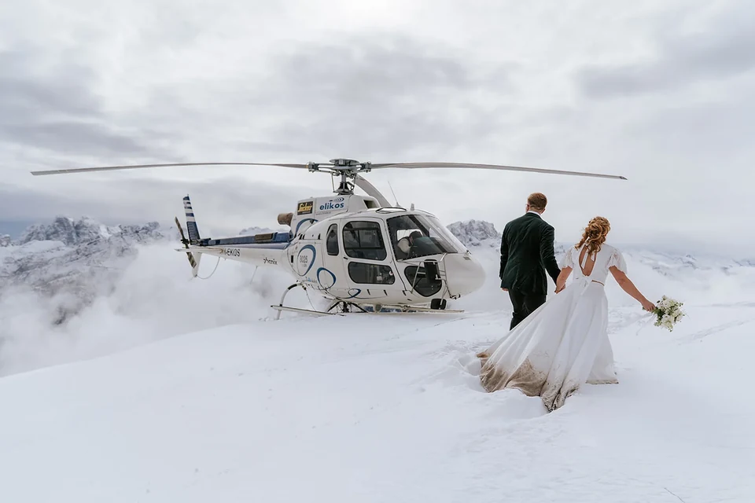
In der Höhe ist es kalt, selbst im August — ein Gipfel im Morgengrauen kann nahe null Grad sein, während das Tal warm ist. Nehmt warme Schichten mit, die ihr für Fotos abstreift und dazwischen wieder anzieht, und ein Cape oder einen Mantel fürs Kleid. Schuhe zählen: feste Schuhe für den Landeplatz, die schönen für die Bilder. Der Rotorabwind ist real — Haare, Schleier und lose Blüten bewegen sich im Abwind, was oft herrlich aussieht — sichert aber, was ihr nicht verlieren wollt. Wir sagen euch für euren Termin und eure Landung genau, was euch erwartet, damit euch nichts überrascht.

Ein Helikopterflug ist der Rahmen, nicht der Rechtsakt — und es gibt zwei ehrliche Wege. Eine symbolische Zeremonie in den Bergen mit der rechtsgültigen Trauung zu Hause wählen die meisten unserer Paare: Ihr unterschreibt vor oder nach der Reise auf dem heimischen Standesamt, und hier oben habt ihr die Zeremonie, die wirklich zählt. Eine standesamtliche Trauung ist ebenso möglich: In Italien bedeutet das für Ausländer ein Ehefähigkeitszeugnis (Nulla Osta), internationale Geburtsurkunden, gültige Reisepässe, meist eine Apostille und beglaubigte Übersetzungen — Monate im Voraus begonnen; Österreich bietet standesamtliche Trauungen und in manchen Regionen genehmigte Orte im Freien. Paare aus Deutschland, Österreich, den USA und Großbritannien heiraten hier — die Papiere unterscheiden sich je Land, und wir weisen euch den richtigen Weg für eures.
Ein ehrliches Wort zum Timing: Je früher ihr euch meldet, desto mehr können wir für euch freihalten. Die besten Sommer-Morgenfenster und alle Wintertermine sind zuerst weg, und eine rechtsgültige Trauung im Ausland braucht ihre Dokumente Monate vorher. Meldet euch, sobald ihr eine grobe Jahreszeit im Kopf habt — auch vor dem genauen Datum —, und wir reservieren ein Fenster, skizzieren den Tag und sagen euch, was ihr zu Hause in Gang setzen solltet. Nichts ist fix, bevor ihr bereit seid; ein frühes Gespräch hält einfach die guten Morgen offen.
Ein Punkt zur Klarheit: In Italien kann eine rechtsgültige Trauung nur am Standesamt (comune) stattfinden — nie an einem Landeplatz am Berg. Die Zeremonie oben am Gipfel ist deshalb immer eine symbolische — und genau so berührend: euer Ja, eure Worte, ihr beide und das Massiv. Die rechtsgültige Unterschrift erfolgt am Standesamt — zu Hause oder an einem italienischen comune vor oder nach dem Flug —, und wir helfen euch in beiden Fällen, die Papiere zu ordnen.
Die Dolomiten sind das meistfotografierte Massiv Europas, und die Ikonen füllen sich. Ein Flug ist der sauberste Weg daran vorbei: Ihr landet, wohin Tagesgäste nicht folgen können, und der Gipfel gehört euch. Trotzdem planen wir die stillen Stunden — erstes Licht, ehe die Täler erwachen, oder letztes Licht, wenn sie sich leeren —, denn leeres Licht ist immer das bessere Licht.
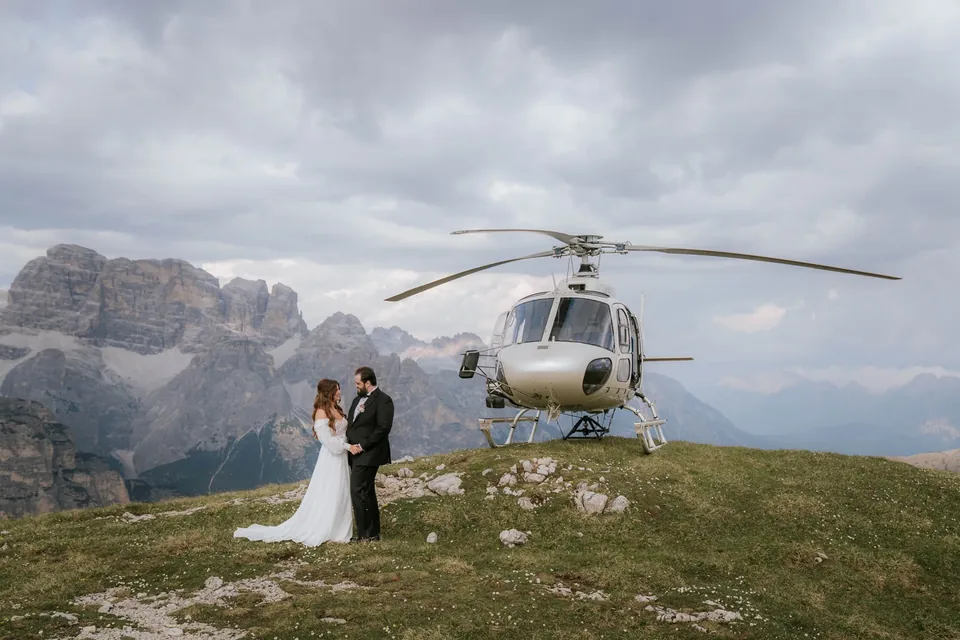
Ein Helikopter ist keine Drohne. Zugelassene Alpinflüge landen unter strengen Regeln auf genehmigten Plätzen; private Drohnen dagegen sind in weiten Teilen der Dolomiten verboten — am Pragser Wildsee seit 2026, von Rangern überwacht und mit Bußgeldern belegt — und in Naturschutzzonen generell. Am Boden bleiben wir auf dem Landeplatz, weg von den Wiesen und aus der geschützten Vegetation, und wir lassen den Berg genau so zurück, wie wir ihn vorgefunden haben. Respekt ist Teil davon, wiederkommen zu dürfen.
Der Flug muss nicht der ganze Tag sein. Paare verbinden ihn mit einem langen Mittagessen auf der Hüttenterrasse, einem Bad im kalten Bergsee, einem Klettersteig oder einer leichten Wanderung — oder einfach einer Flasche, die irgendwo mit Aussicht geöffnet wird. Die Dolomiten sind auch eine leichte Flitterwochen-Basis — Cortina, Gröden und die Dörfer der Alta Badia liegen eine Stunde von allem, voller Hütten, Spas und langer Abende. Wir skizzieren gern die Tage rund um euer Elopement, nicht nur die eine Stunde.
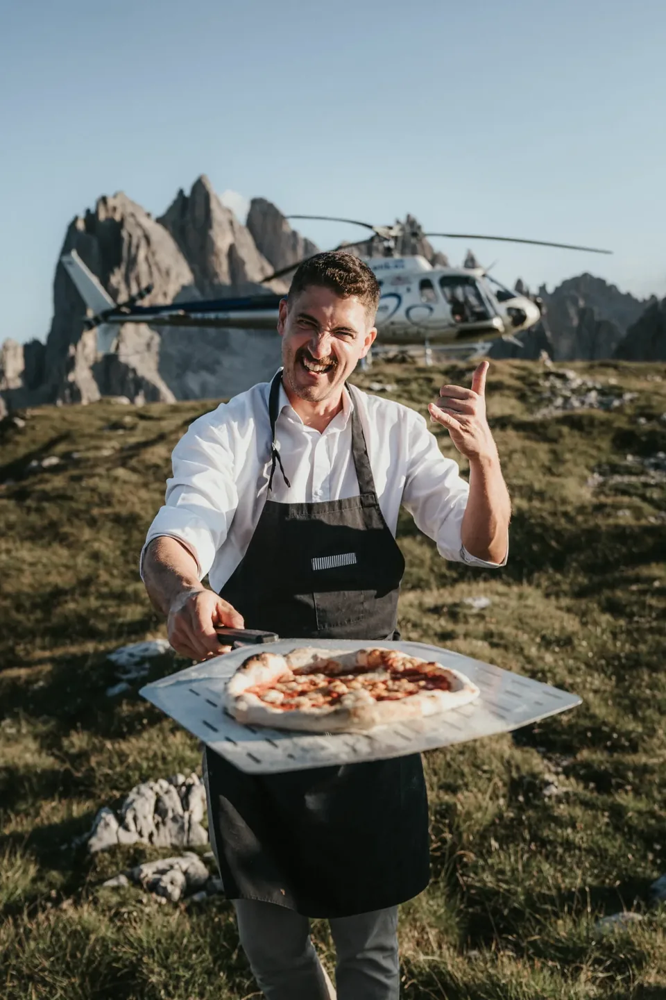
Eine liebste Kombination ist ein See zum Abschluss. Nach dem Gipfel bringt euch eine Landung oder eine kurze Fahrt an stilles Wasser — einen türkisen Spiegel unter den Gipfeln — für die weichsten Bilder des Tages und einen ersten ruhigen Moment als Ehepaar. Andere wollen nach dem Flug gar nichts Geplantes: nur eine Decke, eine Aussicht und den Rest des Morgens für sich. Es gibt keinen falschen Weg, die Stunden zu verbringen, die wir nicht fotografieren; wir sorgen nur dafür, dass sie euch gehören.
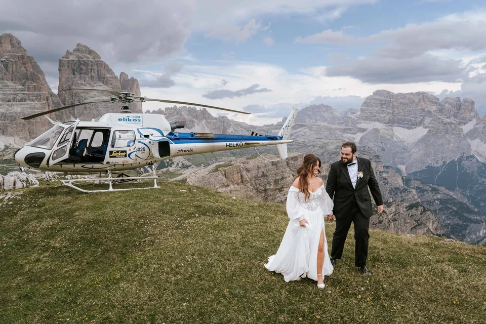
Der Flug ist der kühnste Weg nach oben, aber nicht der einzige. Wollt ihr das Gipfelgefühl ohne den Preis, liefert eine Bergbahn zum Lagazuoi, Sass Pordoi oder zur Seceda einen gewaltigen Blick zum Ticketpreis — die Bahnen öffnen allerdings deutlich nach Sonnenaufgang. Soll sich der Tag verdient anfühlen, schenkt eine Wanderung Einsamkeit und kostet nur den frühen Wecker. Oft kombinieren wir: einfliegen für die Dramatik, dann ein paar Minuten zu einem stilleren Band gehen. Unsicher? Sagt uns, wie ihr zu Höhe, Aufwand und Budget steht — wir sagen euch ehrlich, was passt.
Der Flug wird als Charter gebucht — das Minimum ist ein 50-Minuten-Flug inklusive einer Landung, weitere sind möglich (wir empfehlen bis zu drei). Einige Premium-Plätze wie die Seceda haben einen Aufpreis von etwa 300–500 €. Den genauen Flugpreis bestätigen wir schriftlich; Fotografie und der Rest des Tages werden separat kalkuliert.
Meist nur Minuten pro Richtung — die Dolomiten sind nah. Der Flug ersetzt eine stundenlange Wanderung, sodass ihr die meiste Zeit am Berg verbringt, nicht unterwegs.
Nur auf genehmigten Plätzen — einem Grat, einer Hochwiese oder einem Gletscherplateau, nicht überall. Das Hubschrauber-Unternehmen holt die Landefreigaben ein, und einige ikonische Orte wie die Seceda kosten extra. Den genauen Platz bestätigen wir vor der Buchung.
Die Zeremonie am Berg ist symbolisch — in Italien ist eine rechtsgültige Trauung nur am Standesamt (comune) möglich, nie am Landeplatz. Die meisten Paare unterschreiben die Papiere zu Hause; eine standesamtliche Trauung in Italien oder Österreich ist mit rechtzeitig begonnenen Papieren möglich.
Ein Helikopter fliegt nur bei sicheren Bedingungen. Wir halten ein flexibles Fenster, einen Reservetag und einen schönen Plan B am Boden frei — ein geerdeter Morgen ist nie ein verlorener Tag.
Ja — eine zweite Landung, ein Hüttenessen, ein Toast am See oder eine kurze Wanderung. Wir bauen den ganzen Tag um euch, nicht nur den Flug.
Der Helikopter fasst bis zu sechs Passagiere plus Pilot, ein bis zwei Trauzeugen — oder ein paar enge Gäste — können also mit. Die meisten Paare fliegen trotzdem zu zweit. Die Personenzahl planen wir mit dem Anbieter.
Wir verwenden Cookies für anonyme Statistik (Google Analytics über Google Tag Manager), um die Website zu verbessern. Die Analyse läuft nur mit deiner Einwilligung. Datenschutz